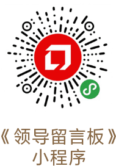
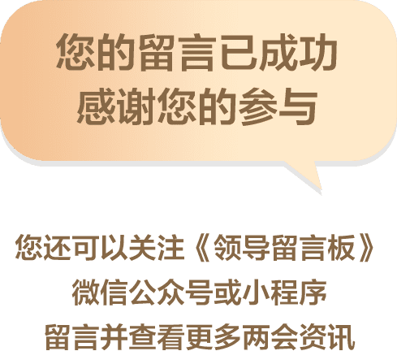

0%


人民网各位网友朋友：
大家好！
我们立足国情、积极探索、大胆创新，注重学习借鉴国外社会保障有益经验，成功建设了具有鲜明中国特色的社会保障体系。我们坚持发挥中国共产党领导和我国社会主义制度的政治优势，集中力量办大事，推动社会保障事业行稳致远；坚持人民至上，坚持共同富裕把增进民生福祉、促进社会公平作为发展社会保障事业的根本出发点和落脚点，使改革发展成果更多更公平惠及全体人民；坚持制度引领围绕全覆盖、保基本、多层次、可持续等目标加强社会保障体系建设；坚持与时俱进，用改革的办法和创新的思维解决发展中的问题，坚决破除体制机制障碍，推动社会保障事业不断前进；坚持实事求是，既尽力而为、又量力而行，把提高社会保障水平建立在经济和财力可持续增长的基础之上，不脱离实际、超越阶段。要坚持和发展这些成功经验，不断总结，不断前进



